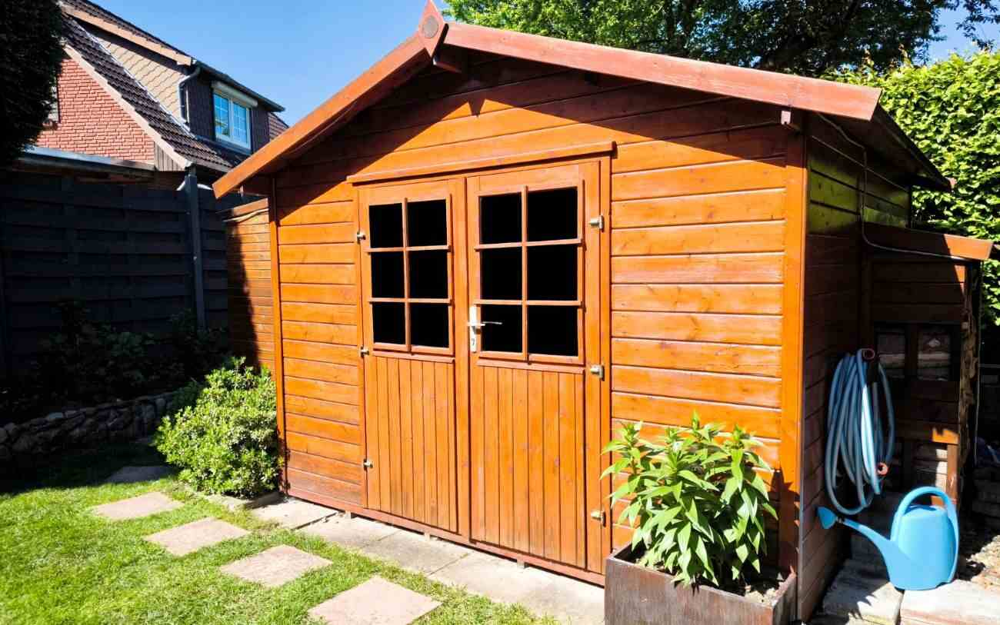
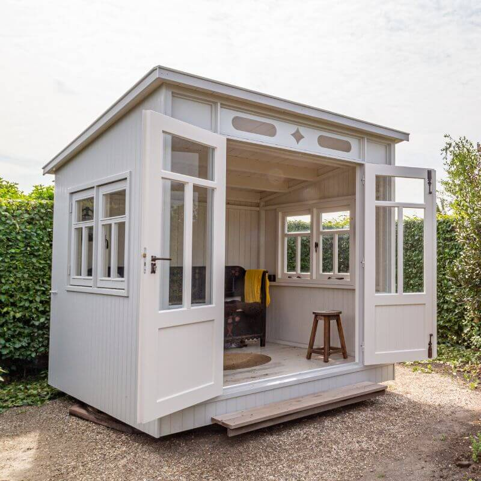

Work from home space
Create a quieter place for home working, meetings and focused productivity away from the main house.
Bespoke Garden Rooms
Tailored extra space for work, leisure and everyday living in Bangor and nearby areas.
If you need more usable space but do not want to compromise the layout of your main home, a bespoke garden room can be a practical and flexible solution. DM Design & Build LTD creates bespoke garden rooms in Bangor and nearby areas for homeowners who want a separate space that feels purposeful, comfortable and built around the way they live.

What this service solves
A bespoke garden room is ideal when you want more room to work, relax or focus, without changing the way the main house functions.
What we offer
Bespoke garden rooms are a smart option when you need extra space but want that space to feel separate, purposeful and easy to use. For homeowners in Bangor, Menai Bridge, Beaumaris, Caernarfon and nearby areas, a tailored garden room can create a better balance between home life and the extra room you need for work, exercise, hobbies or guests.
The benefit of a bespoke garden room is that it can be designed around the way you actually want to use it. Instead of trying to force an existing room inside the house to do too much, you gain a dedicated space that can support your lifestyle more effectively. That makes garden rooms a practical solution for both everyday function and long-term enjoyment of the property.

Built around the customer
Most customers are not just looking for a building in the garden. They want a space that feels worth using every day, suits the property and gives them genuine extra flexibility.
Testimonials
Replace these with your real reviews when ready.
Areas we cover
We create bespoke garden rooms in Bangor and across nearby parts of Gwynedd and Anglesey. If you are searching for bespoke garden rooms in Bangor, garden room builders near Menai Bridge, tailored garden rooms in Caernarfon or bespoke garden rooms near you, DM Design & Build LTD is here to help.
Our service is designed for homeowners who want extra space that feels separate, useful and built around real everyday living.
FAQ
Answers to common questions about bespoke garden rooms in Bangor and nearby areas.
Yes. We build bespoke garden rooms in Bangor and nearby areas including Menai Bridge, Beaumaris, Caernarfon, Bethesda and surrounding locations.
A bespoke garden room can be designed for home working, a studio, a gym, a hobby room, a quiet retreat or flexible extra living space.
A garden room gives you a separate, purpose-built space without relying on an existing room inside the main house to do too many different jobs.
Yes. We work across Bangor and nearby areas such as Menai Bridge, Beaumaris, Caernarfon, Llanberis, Llanfairfechan and more.
You can contact us here or call 07835 827283 to discuss your project.
Ready to create extra space?
Speak to DM Design & Build LTD about a bespoke garden room in Bangor or a nearby area.
We help homeowners create tailored extra space for work, leisure, hobbies and everyday living with practical garden room builds.